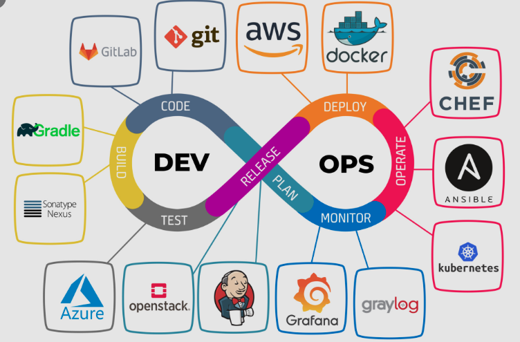
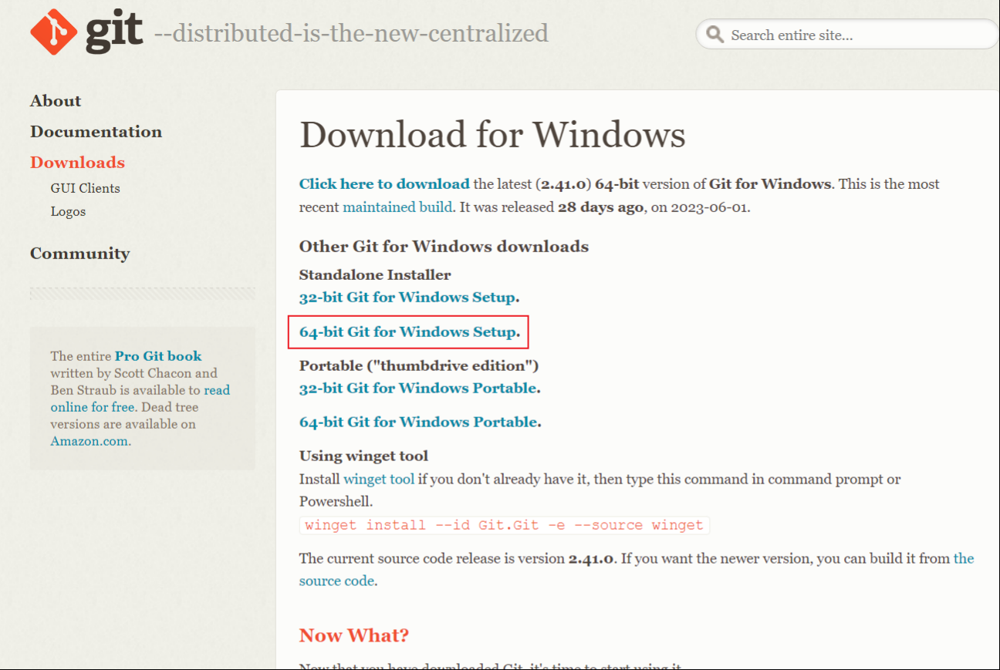
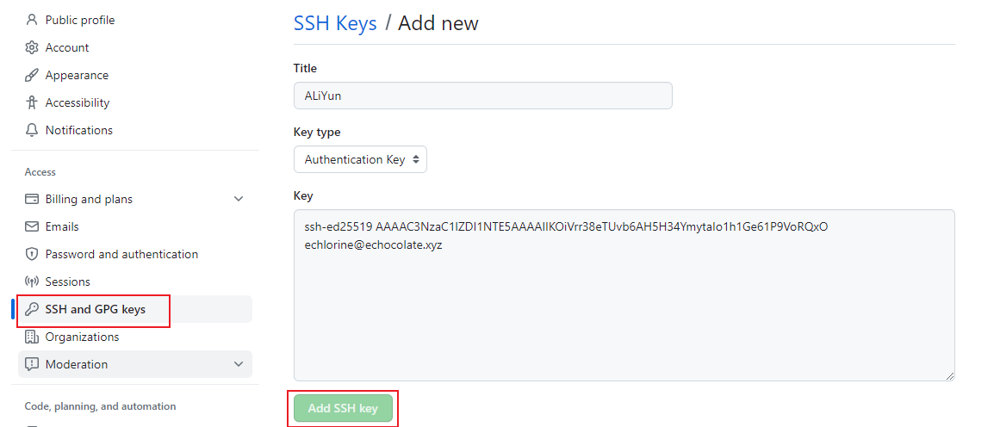
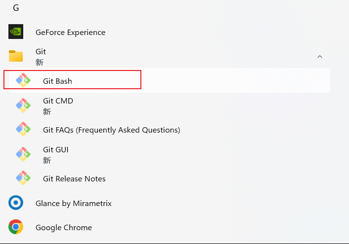
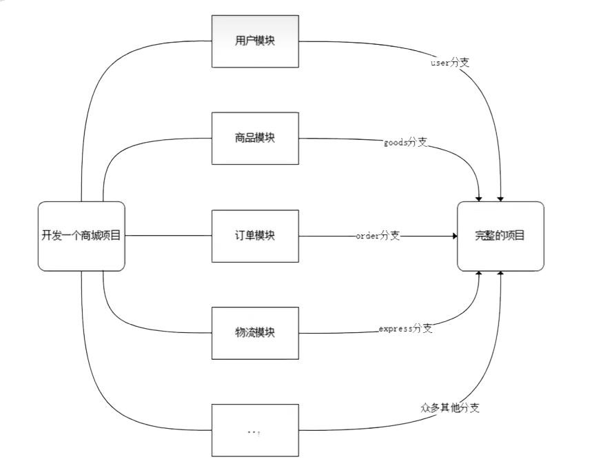
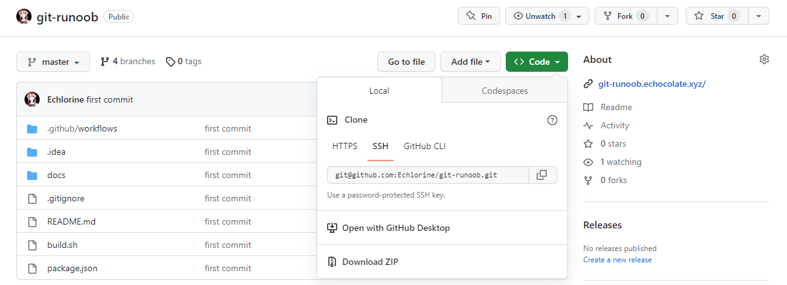

# 1. Git的准备工作
# 1.1 关于Git
Git 是一个开源的分布式版本控制系统，用于敏捷高效地处理任何或小或大的项目。 
# 1.2 安装Git
安装Git：官网 (opens new window)下载，一路安装就可以。
注意：在Linux环境下，不需要安装Git，Linux系统自带 Git。

验证是否安装成功，出现版本信息即代表安装成功。
PS C:\Users\13480> git version
git version 2.41.0.windows.1
# 1.3 配置Git
主要配置邮箱和用户名，Git 的配置都可以参考官方文档 (opens new window)。
配置 Git 主要配置用户信息，即设置用户名和邮件地址。
$ git config --global user.name "username"
$ git config --global user.email "user@example.com"
配置好后可以通过git config --list或者git config --list --show-origin命令查看。
PS C:\Users\13480> git config --list
diff.astextplain.textconv=astextplain
filter.lfs.clean=git-lfs clean -- %f
filter.lfs.smudge=git-lfs smudge -- %f
filter.lfs.process=git-lfs filter-process
filter.lfs.required=true
http.sslbackend=openssl
http.sslcainfo=C:/Program Files/Git/mingw64/etc/ssl/certs/ca-bundle.crt
core.autocrlf=true
core.fscache=true
core.symlinks=false
core.editor="C:\\Program Files\\Microsoft VS Code\\bin\\code" --wait
pull.rebase=false
credential.helper=manager
credential.https://dev.azure.com.usehttppath=true
init.defaultbranch=master
user.name=cmitecho
user.email=echlorine@echocolate.xyz
# 1.4 设置key
key 的是为了保证克隆或者推送项目时，能够进行权限的验证。
生成 ssh-key：
PS C:\Users\13480> ssh-keygen -t ed25519 -C "echlorine@echocolate.xyz"
Generating public/private ed25519 key pair.
Enter file in which to save the key (C:\Users\13480/.ssh/id_ed25519):
Enter passphrase (empty for no passphrase):
Enter same passphrase again:
Your identification has been saved in C:\Users\13480/.ssh/id_ed25519
Your public key has been saved in C:\Users\13480/.ssh/id_ed25519.pub
The key fingerprint is:
SHA256:evZckbjj6XcjncSrezsiVkSKGPNmWI3iMNJiBoj8QDA echlorine@echocolate.xyz
The key's randomart image is:
+--[ED25519 256]--+
|Eo . o |
|o+= + + o . . |
| ooo + O . o |
| . + = .... |
| oS ..o. |
| . ...o |
| . o o..o o |
| o +o++ O |
| o*ooB.+ |
+----[SHA256]-----+
上述代码解释：
Enter file in which to save the key (/home/echo/.ssh/id_ed25519):key 在磁盘上面的位置，回车默认即可。
Enter passphrase (empty for no passphrase):留空即可。
在本地生成key之后，需要将 key 与 Github（或者类似的代码管理平台）账户绑定。

注意事项：
部分Windows电脑在生成 ssh key 的时候，可能会报错，这时候可以使用Git 提供的终端来生成Key。

# 2. Git 的使用
# 2.1 开发流程
在开发的时候往往是团队协作，多人进行开发，因此光有一个分支是无法满足多人同时开发的需求的，并且在分支上工作并不影响其他分支的正常使用，会更加安全。
Git鼓励开发者使用分支去完成一些开发任务。
项目需求：

普通需求：
公司领导给了你一个开发需求，为了防止编写的代码影响之前已有代码的运行，我们通常会针对这个需求建立一个分支，在这个分支上进行需求的开发，开发测试完毕之后，再将这个分支上的代码合并到之前的代码上。
好处：
- 每人处理各自的部分，开发高效
- 不同的分支彼此独立，互不影响，更稳定
# 2.2 Git 基础概念
Git本地操作的三个区域：
- 工作区(workspace)：即工作目录，在其中进行文件的操作。具体位置就是电脑中的项目目录
- 暂存区(staging area)：当执行
add操作之后。具体位置在一般在.git目录下的index文件中 - 版本库(local repository)：又称本地仓库，当执行
commit操作之后，会将暂存区的文件提交到版本库中。具体位置一般在工作区中的隐藏目录.git

工作流程：

# 2.3 Git 基础操作
# 克隆项目
克隆项目：将代码克隆到本地

git clone git@github.com:Echlorine/git-runoob.git
git clone -b feature-year-report git@github.com:Echlorine/git-runoob.git
# 分支操作
git branch (branchname)
git checkout (branchname)
git checkout -b (branchname)
git branch -d (branchname)
# 暂存与提交
git add
git commit -m "message"
# 推送与拉取
git push
git pull
# 2.4 分支合并与冲突处理
# 分支合并
git merge
# 冲突处理
冲突发生在分支合并的时候。
处理原则：
- 不要删除别人写的代码
- 如果实在是逻辑冲突的话，可以找代码编写者协助解决。
冲突产生的原因：没有拉取最新的分支。
# 2.5 亲自实践
利用 git-runoob (opens new window) 这一项目来模拟工作环境中多人协作的场景。
可以查看项目所对应的 Git 练习 (opens new window) 这个网站，在“亲自实践”部分，可以实时看到自己所添加的更新。